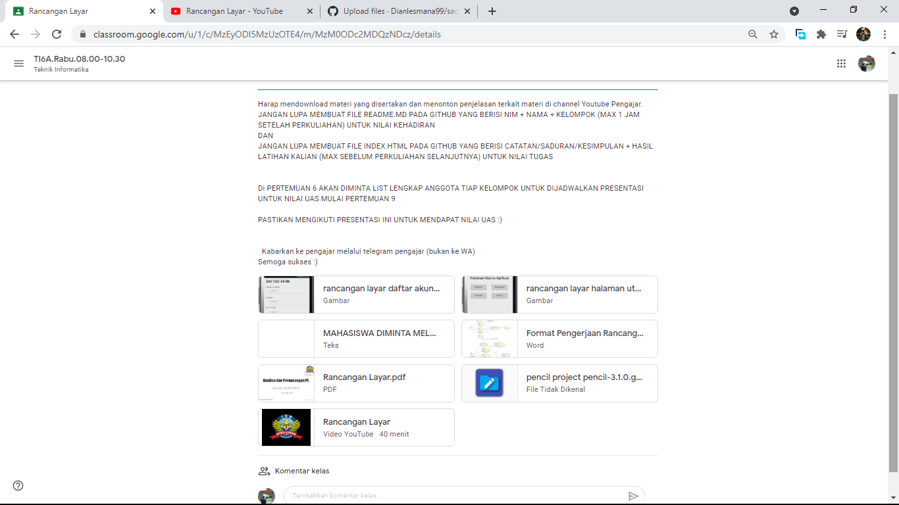

NIM : 1811500002
Nama : Dian Lesmana
Kelompok : TI6A
Hasil saya menyadur di pertemuan 5 :
- Perhitungan Nilai Kehadiran cukup membuat file index.html disetiap direktori pertemuan github (angka), Contoh 5 untuk pertemuan 5
- Membuat File README.MD yang berisikan Nim + Nama + Kelompok sebagai nilai kehadiran
- Perhitungan nilai tugas, dari kualitas konten file index.html tiap pertemuan yang saya sadur akan digunakan untuk perhitungan nilai tugas
- Mempelajari tentang Rancangan layar, lanjutan dari Usecase Diagram dan Deskripsi Usecase
- Latihan membuat Rancangan layar
Download File Rancangan Layar download
Download File Astah download
Download File Microsoft Word download
- Mempelajari dan juga menganalisis Materi yang diberikan oleh Dosen di GC

- Menyimak Penjelasan yang diberikan oleh dosen

- Mempraktekkan atau mengerjakan Latihan seperti yang telah diajarkan oleh Dosen